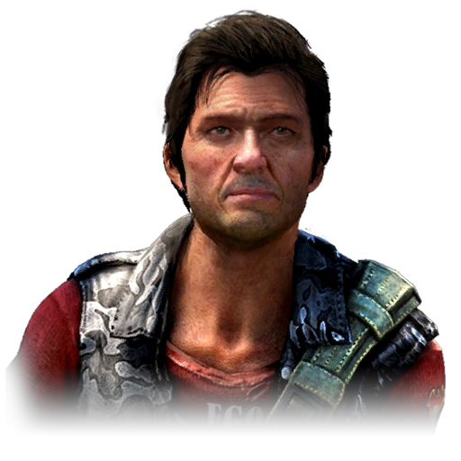

Серце губернатора Хармона зворушили лиха нашої країни, він щиро полюбив її народ і звичаї. Він покинув свою рідну Америку, щоб тут провести свої дні. Найбільше він прагнув миру для півдня, і, щоб його досягти, вів переговори з терористами із Золотого шляху.

Наш великий і славний король, який ризикував своїм життям і здоров'ям, щоб звільнити Кірат від кайданів минулого. Він пожертвував усім заради своєї другої батьківщини і любить її народ, як своїх дітей. Нехай осяє вас світло Пейгана.

Материнська ніжність, яку Нур відчуває до Кірата, не знає меж. Вона охоплює всіх, будь то людина чи тварина. Як орлиця над орленям, вона зробить все, що завгодно, щоб захистити своїх і вберегти їх від зла. Відвідайте Арену Шанат — і ви все побачите самі.

Права рука Пейгана, яка керує елітною Королівською гвардією. Вона використовує свої знання про природу і психологію людини, щоб зцілити всі шрами Кірата — добротою і розумінням.